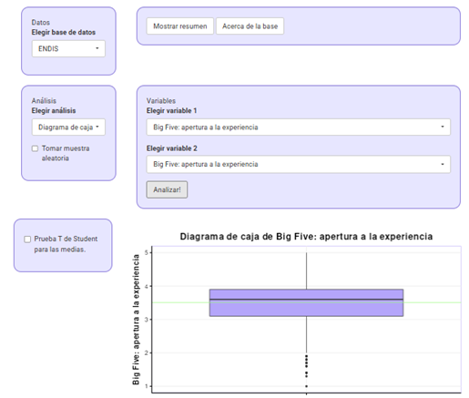
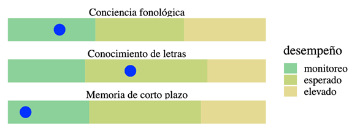
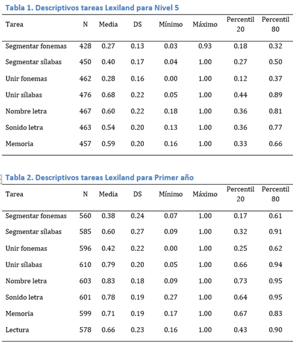
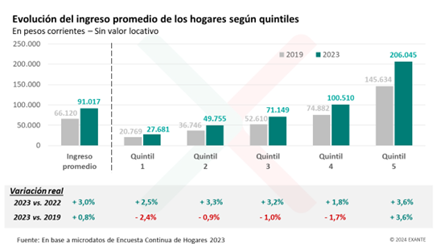
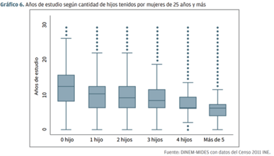

Práctico: Describir los datos - rango, cuantiles, y diagrama de cajas (S03)
3.1 Rango, cuantiles, y diagrama de cajas
Lectura asociada
Contenidos
Medidas de dispersión: rango
Cuantiles
Visualización de datos: diagrama de cajas (boxplot)
3.2 Panel de datos: Factores de personalidad del cuidador en ENDIS
En esta unidad estamos viendo que las medidas de tendencia central, por sí solas, no son suficientes para “entender” del todo nuestros datos. Por este motivo, contamos con una serie de estadísticos que nos permiten caracterizar la dispersión de los datos.
Recuperemos el histograma del ejercicio anterior (variable Apertura a la experiencia)
Mirando el histograma ¿cuál dirías que es el rango de la variable?
¿Qué datos del histograma usaste para calcularlo? ¿Cómo lo calculaste?
Ahora explora la opción gráfica diagrama de cajas (Boxplot) para esta misma variable. ¿Qué información te ofrece este gráfico? ¿Qué indica la línea verde? Estima qué valores corresponden al percentil 25, 50 y 75.
¿A través de qué otra funcionalidad del panel puedes acceder al valor de los percentiles 25, 50 y 75? Contrasta estos valores con la estimación que habías realizado a partir del boxplot.
Ahora repite el procedimiento de análisis con los otros cuatro factores de personalidad. ¿Es similar la distribución?
¿Necesitás ayuda?

3.3 Actividad: Informes de evaluación del desarrollo
En los videos de esta unidad vimos un ejemplo de aplicación de cuantiles. En particular, que son útiles para comparar. Por ejemplo, entre los resultados de aplicar instrumentos estandarizados de evaluación psicológica es frecuente la referencia a percentiles. En otras palabras, podemos saber la posición de un sujeto u observación con respecto a una muestra de referencia.
Veamos el siguiente ejemplo:
El siguiente es un extracto del informe de resultados de la aplicación de un instrumento para la identificación temprana del riesgo lector (el documento tiene algunas omisiones a los efectos de este ejercicio).
Informe de riesgo lector
Fecha del informe: 07/11/24
Identificador (ID) del niño/a: 2eb2a023-482d-4
Introducción
En el siguiente informe se presentan los resultados de la evaluación de Lexiland correspondientes al ID 2eb2a023-482d-4. Los datos asociados a dicho identificador son confidenciales y solo se encuentran a disposición de la institución educativa en donde se llevó a cabo la evaluación.
Descripción de la evaluación
Lexiland es una herramienta digital que evalúa habilidades pre-lectoras en tres dimensiones: conocimiento de las letras, conciencia fonológica, y memoria. Las tres habilidades fueron seleccionadas a través de un estudio de investigación científica que determinó la confiabilidad de su utilización para identificar el riesgo lector a edades tempranas. Su aplicación está destinada a niños y niñas de nivel inicial y primaria y puede ser utilizada tanto en entornos escolares como clínicos.
Resultados en las dimensiones evaluadas
La siguiente gráfica muestra los resultados obtenidos por el niño/a. Las diferentes dimensiones evaluadas fueron analizadas en relación a la base de datos de Lexiland, con una muestra de 400 niños y niñas de 26 escuelas públicas de Montevideo de contexto sociocultural quintil cuatro y quintil cinco.
El nivel de zona de monitoreo marca el rango de valores obtenido por el 30% de los niños y niñas con desempeño más descendido. El nivel de desempeño esperado marca el rango de valores obtenidos por el 50% de los niños y niñas. El nivel elevado marca el rango de valores obtenidos por el 20% de los niños y niñas con desempeño más elevado. El punto azul marca el puntaje obtenido por 2eb2a023-482d-4 en las tres dimensiones evaluadas.

¿Qué evalúa este instrumento?
¿Cuál es la muestra de referencia? ¿Para qué se utilizó esta muestra?
¿Qué porcentaje de niños se espera encontrar en cada una de las categorías de desempeño (elevado, esperado, zona de monitoreo)?
Concluye sobre cuáles son los puntos de corte de las categorías de desempeño (elevado, esperado, zona de monitoreo), expresados en percentiles.
El informe corresponde a un caso específico (observa la ubicación de los puntos azules). Describe la situación de este caso específico, comparado con la muestra de referencia, en cada una de las tres dimensiones evaluadas.
Ejercicio con tablas de Lexiland
Las siguientes tablas muestran los estadísticos descriptivos correspondientes a las distintas tareas de Lexiland, aplicadas a niños que cursaban Nivel 5, en el primer caso, y Primer año en el segundo. La muestra estuvo compuesta por 1111 alumnos de centros educativos de los cinco quintiles socioeconómicos (categorización de ANEP), ubicados en los departamentos de Montevideo, Canelones, Salto, San José, Colonia y Soriano.

Si un niño que cursa Nivel 5 obtiene como resultado 0.66 en la prueba de Memoria ¿cuál es su posición en relación a los otros niños de Nivel 5 que integraban la muestra? ¿Qué puedes concluir respecto a su desempeño en esa tarea a partir de estos datos?
¿Cómo se interpretaría esa misma puntuación si la obtiene un niño de Primer año?
3.4 Actividad: Medidas de tendencia central y quintiles aplicado al ingreso de los hogares uruguayos
Observa el gráfico presentado a continuación y contesta las siguientes preguntas:

¿A qué se refiere con ‘Ingreso promedio’ en el gráfico de más a la izquierda? ¿Cómo fueron los ingresos promedio en el año 2023 comparado con los ingresos promedio en el año 2019? ¿Y comparado con el año 2022?
¿A qué corresponden los quintiles? Discute las diferencias en ingreso mensual líquido y en su variación real según el quintil.
3.5 Panel de datos: Triada Oscura y SERCE
Usando el cálculo de media, mediana y cuartiles de las siguientes variables, responde las siguientes preguntas. Puedes ayudarte ubicando sus posiciones manualmente en el histograma y utilizando diagramas de caja.
Datos Tríada Oscura
¿Puede decirse que más de la mitad de los sujetos de la base tienen puntuaciones de narcisismo mayores a 25?
Una puntuación en la escala de maquiavelismo de 18, ¿es más bien baja o más bien alta? Fundamenta tu respuesta.
Identifica al sujeto nº 6 en la base de datos. ¿Qué edad tiene? ¿Proviene del interior?¿Cuántas veces entra a Facebook o Instagram por día? ¿Es un número relativamente bajo o relativamente alto?
¿Puede decirse que los hombres poseen en general, niveles de maquiavelismo más altos? ¿Y de narcisismo?
¿Puede decirse que los estudiantes provenientes del exterior muestran menores niveles de narcisismo? ¿Y de maquiavelismo?
Datos SERCE
¿Puede decirse que la mayoría de las niñas y niños tiene 12 años?
Una puntuación de 620 en matemática, ¿es una puntuación muy alta? ¿Y la misma puntuación en la prueba de ciencia?
¿Puede decirse que la mayoría de los estudiantes obtuvo puntuaciones mayores a 550 en la prueba de literatura? ¿Y en la de ciencias? ¿Y en la de matemática?
3.6 Y para terminar, un par de ejercicios múltiple opción, como los del parcial
- En un Informe del Mides de 2011, se presenta el siguiente gráfico en el que se muestra la distribución de años de estudio de mujeres de 25 años y más según el número de hijos. Indica qué afirmación es correcta:

- La cantidad de años de estudio de las mujeres aumenta a mayor número de hijos
- A mayor número de hijos, la mediana de años de estudio disminuye
- La distribución de años de estudio es simétrica, para cada categoría de la variable hijos
- Más del 25% de las mujeres con 5 hijos o más tienen 10 años o más de estudio
- Con respecto a los cuartiles:
- Dividen a la muestra en 5 partes iguales
- Dividen a la muestra en 3 partes iguales
- El cuartil 2 corresponde a la mediana
- El cuartil 3 corresponde a la mediana